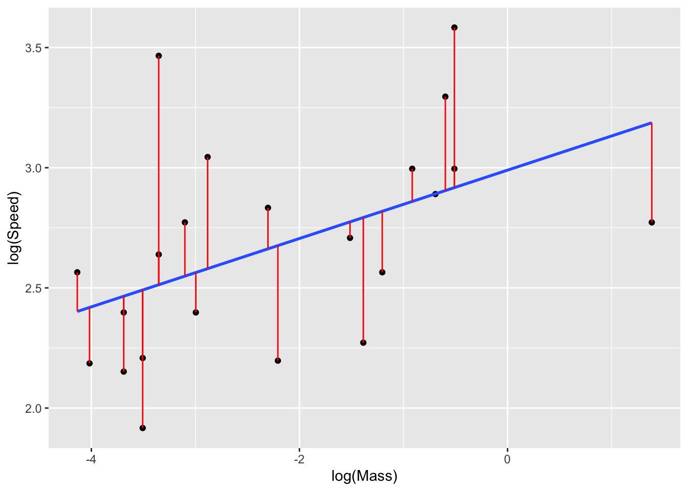

1.1 Simple regression: rodents revisited
We looked at the rodent data earlier. Our discussion about suitable scales and the exclusion of the porcupine were already preliminary parts of the process of building a model. We then proposed a straight line model to describe the connection between log(Mass) and log(Speed). This simple setting sets the pattern for more general linear models.
library(rpanel)
library(tidyverse)
rodent <- filter(rodent, rownames(rodent) != "North American Porcupine")
model2 <- lm(log(Speed) ~ log(Mass), data = rodent)
ggplot(rodent, aes(log(Mass), log(Speed))) + geom_point() +
geom_smooth(method = "lm", se = FALSE) +
geom_segment(xend = log(rodent$Mass), yend = fitted(model2), col = I("red"))
> Introduce the model formula.
> Refer to rp.lmsmall interaction.
The process of fitting the model involves quantifying, for any particular line we might consider, how well this line captures the pattern in the data. The red lines in the plot above show the deviations of the data from the line and this can be quantified in the sum-of-squares of these deviations. The fitted model corresponds to the straight line which minimises this sum-of-squares. The problem can be expressed and solved in a general way, giving simple formulae for the slope and the intercept of the fitted line. These are estimates of the true underlying slope and intercept for the relationship which generated the data.
The individual data points show considerable variation around the fitted line and a description of this is also part of the modelling process. The deviations of the points from the fitted model are called the residuals. Essentially, we calculate the standard deviation of these residuals (with a slight technical modification) to estimate the variation of the observations around the model.
> Model checking - include refer to earlier model formulation discussion - log scale.
> Comment on re-centering the slope change.
> Discuss influence informally - porcupine - rp.regression animation.
The estimates of intercept and slope are usually of principal interest. We can view these as:
## Estimate Std. Error t value Pr(>|t|)
## (Intercept) 2.989936 0.15518074 19.267444 2.199202e-14
## log(Mass) 0.142214 0.05858014 2.427683 2.475992e-02The standard errors t-statistics (‘t value’) and p-values (‘Pr(>|t|)’) have already been calculated for us. Our main question of interest in this example is whether log(Speed) and log(Mass) are linked and the p-value (0.025) is sufficiently small to indicate that the hypothesis of no link (a slope of 0) is implausible.
An interesting question here is: what is the population from which our data have been sampled? Most the quadrupedal rodents we know of have been tabulated in the dataset. One view is that the data are sampled from the evolutionary process which has allowed these animals to adapt to their environment. In other evolutionary circumstances we could have observed different rodents.
> Reflect on the general thinking and steps in model building.